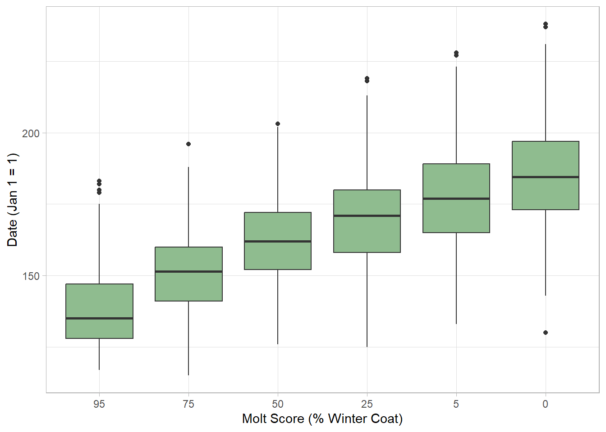
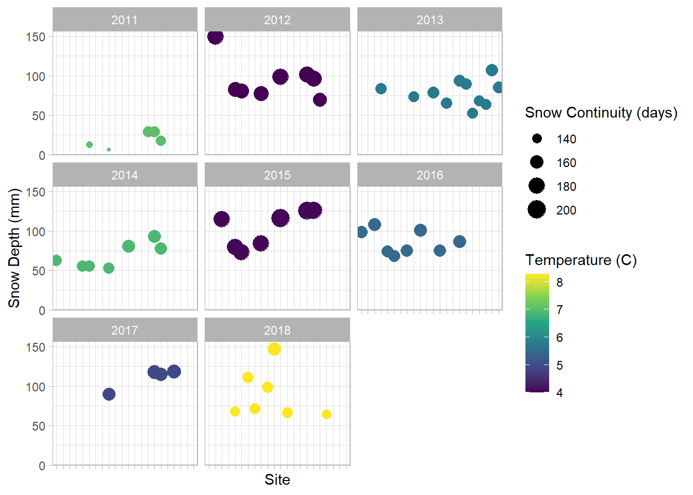
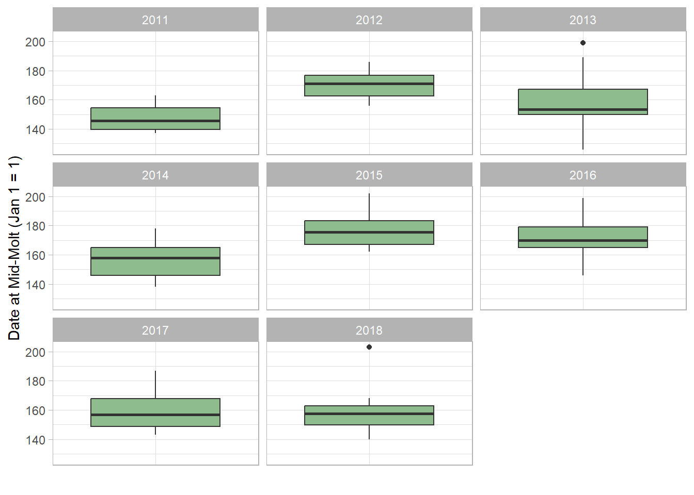

Chapter 4 Visualizing Data Trends
Now that the data are cleaned up (duplicate information removed) and located in a relational database, we can begin to explore trends in the data with a few visualizations. First, we need to load the necessary tidyverse package and the viridis package for preferred colors. (We also need the DBI package, but that has already been loaded):
## ── Attaching core tidyverse packages ──────────────────────────────────────────── tidyverse 2.0.0 ──
## ✔ dplyr 1.1.4 ✔ readr 2.1.5
## ✔ forcats 1.0.0 ✔ stringr 1.5.1
## ✔ ggplot2 3.5.1 ✔ tibble 3.2.1
## ✔ lubridate 1.9.3 ✔ tidyr 1.3.1
## ✔ purrr 1.0.2
## ── Conflicts ────────────────────────────────────────────────────────────── tidyverse_conflicts() ──
## ✖ dplyr::filter() masks stats::filter()
## ✖ dplyr::lag() masks stats::lag()
## ℹ Use the conflicted package (<http://conflicted.r-lib.org/>) to force all conflicts to become errors## Loading required package: viridisLiteNext, we need to connect to the Arctic fox database that we created:
And load the tables of interest:
molt <- dbGetQuery(db_conn, "SELECT * FROM molt_observations;")
site_cond <- dbGetQuery(db_conn, "SELECT * FROM site_year_conditions;")4.1 General molt timing
I first wanted to get an idea of the general timing of molt through the season, across all the sites and years. At this point, as I tried to write the code using ggplot, I discovered that for some reason, the dates in my original data had been stored as functions. So I had to change them to numeric before I proceeded with ggplot. Additionally, I used the fct_rev function to reverse the order in which molt scores were displayed to match the chronology (heaviest winter coat to summer coat over the course of the season). Here is the code:
molt_plot1 <- molt
date_value <- as.numeric(molt$date)
ggplot(data = molt,
mapping = aes(x = fct_rev(factor(moult_score)), y = date_value)) +
geom_boxplot(fill = "darkseagreen") +
labs(x = "Molt Score (% Winter Coat)",
y = "Date (Jan 1 = 1)") +
theme_light()
4.2 Conditions across sites and years
Next, I wanted to get a feel for how temperature and snow conditions varied across sites and years. I plotted snow depth at each site and varied the color for temperature and the size of the points for continuity of snow. I broke the chart into separate plots for each year so that I could observe how conditions across the whole region varied from year to year:
ggplot(data = site_cond,
mapping = aes(x = factor(site_id), y = snow_depth,
color = temperature, size = snow_continuous)) +
geom_point() +
facet_wrap(~ year) +
labs(x = "Site", y = "Snow Depth (mm)", color = "Temperature (C)",
size = "Snow Continuity (days)") +
scale_color_viridis_c() +
theme_light() +
theme(axis.text.x = element_blank())
4.3 Molt timing and environmental conditions
The previous plots enabled me to see that the years 2012 and 2015 were the coldest and had the most days of continuous snow. In contrast, 2011, 2014, and 2018 had warmer temperatures and fewer days of continuous snow. (2013, 2016, and 2017 were intermediate.) I wanted to see how the timing of the molt varied each year, so I needed to left_join to the site_cond table to pick up the year column. I chose just to look at the dates associated with mid-molt, or when the winter coat was at 50%, so I filtered for moult_score == 50 before piping it into ggplot. The code is as follows:
molt_plot2 <- molt %>%
left_join(site_cond) %>%
filter(moult_score == 50) %>%
ggplot(mapping = aes(x = factor(moult_score), y = date)) +
geom_boxplot(fill = "darkseagreen") +
facet_wrap(~ year) +
labs(x = "",
y = "Date at Mid-Molt (Jan 1 = 1)") +
theme_light() +
theme(axis.text.x = element_blank()) +
theme(axis.ticks.x = element_blank())## Joining with `by = join_by(site_year_id)`
It is interesting to note that the timing of mid-molt is indeed later in the colder, snowier years of 2012 and 2015 and appears to be earlier in the warmer years, especially 2011, which had both warmer temperatures and little snow. This could be the basis of further statistical testing to see if these differences were significant. This dataset provides an interesting glimpse into the timing of the molt of Arctic foxes in relation to environmental conditions across several years and sites in Norway.